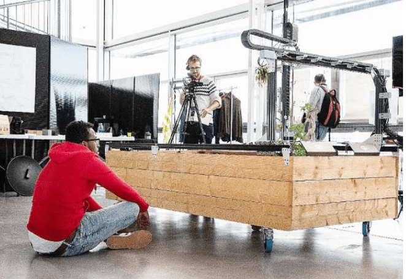

INNOVATION LAB
Post-graduate - 8 mois
L'Innovation Lab est un programme interdisciplinaire d'innovation durable
Il forme une nouvelle génération d’innovateurs, déjà expérimentés ou diplômés dans leur domaine, et qui souhaitent enrichir leurs compétences pour développer des solutions durables à des problématiques complexes.
Chaque promotion travaille sur un challenge combinant des enjeux technologiques, sociaux, économiques et environnementaux
Chaque défi est mené avec la collaboration d’une communauté de partenaires et de contributeurs : entreprises, organisations publiques, associations, académiques…
Les apprenants se forment sur le terrain en expérimentant un cycle complet d’innovation durable.

Pourquoi L’Innovation Lab au sein de La Plateforme ?
Les défis de société auxquels nous sommes confrontés sont complexes et interconnectés. Ils combinent des enjeux économiques, environnementaux et sociaux.
Ils sont étroitement liés aux technologies numériques qui offrent des opportunités de solutions mais posent également des questions éthiques.
La question de la durabilité dans l’innovation est plus que jamais cruciale, car elle détermine notre capacité à apporter des solutions sans compromettre le futur des générations à venir.
Cela implique d’innover dans le respect du vivant, en limitant nos besoins en ressources naturelles, en mettant en place des circuits circulaires, en utilisant les bonnes technologies, et en étant le plus inclusif possible.
Pour concevoir et exécuter une telle démarche d’innovation, dans le monde complexe qui est le nôtre, il faut donc déployer une palette de compétences techniques et relationnelles qui va bien au-delà de son savoir-faire “métier”.
C’est ce que nous proposons d’acquérir et d’explorer au sein de l’Innovation Lab.
Contenus de la formation
- Créativité : Maîtriser une palette de méthodes et outils dédiés à la créativité animer les phases d’idéation dans toutes les approches (frugale, radicale, moonshot…)
- Recherche de solutions : Développer le mindset et les méthodes de recherche de solutions dans une approche pragmatique. Exécuter le développement de solutions. Fabriquer le prototype
- Leadership et coopération : Développer les savoir-être les savoir-faire pour animer une équipe d’innovation, manager la diversité et l’interdisciplinarité (interne et externe) et mettre en place des méthodes de travail ouverte et basées sur la coopération
- Ethique du numérique : Développer un esprit critique et savoir interroger le rôle et l’impact des technologies dans nos sociétés et plus particulièrement dans nos projets d’innovation
- Nouveaux modèles économiques : Concevoir des modèles économiques innovants régénératifs et circulaires pour ses projets d’innovation
- Durabilité et principes du vivant : Intégrer les principes du vivant et les principes de durabilité, de bio-inspiration et d’éco-conception à toutes les étapes de la démarche d’innovation (de l’innovation à la mesure d’impact)
- Complexité : Développer des savoir-être et des savoir-faire pour analyser la complexité à différentes échelles du projet et développer une approche systémique
Objectif pédagogiques
Former des chefs de projets innovation durable dotés de solides savoir-être et savoir-faire pour, face à des défis complexes :
- Analyser de façon stratégique et opérationnelle un problème complexe, intégrant les dimensions environnementales, technologiques et sociétales
- Intégrer les nouvelles approches environnementales (écoconception, principes du vivant, circularité, biomimétisme…) à toutes les étapes du processus d’innovation jusqu’au modèle économique et les mesures d’impact.
- Développer une approche éthique des technologies et de leurs impacts
- Mettre en place des processus d’innovation, de design et de prototypage de solutions du concept à l’exécution
- Piloter une équipe et/ou un réseau de partenaires avec un leadership favorisant l’intelligence collective et la coopération
Métiers visés
- Chef de projet / Manager de l’innovation
- Designer de la transition
- Chef de projet RSE
- Facilitateur de démarches en intelligence collective
- Consultant innovation durable
Profils recherchés
Chaque promotion interdisciplinaire est construite sur la mixité des profils pour pousser loin la créativité collective : les profils et parcours atypiques sont étudiés avec attention !
- Diplômés bac +⅗ ou équivalent expérience professionnelle dans un des domaines suivants :
- Design
- Architecture/Urbanisme
- Technologies numériques
- Sciences
- Economie de l’environnement
- Management
- Arts et médias interactifs
- Image
- Prototypage
- Orientés recherche de solutions et curieux
- Ouverts à la collaboration
- Appétence pour le numérique
- Sensibles aux enjeux environnementaux et sociétaux
- Ayant des réalisations concrètes à présenter (portfolio)
Informations pratiques
Février 2022 – Septembre 2022
Le démarrage sera proposé en distanciel ou en
Langue de travail : français
Date limite de candidature : 30 octobre 2021
Entretien à réception de votre candidature
Le programme Innovation Lab est totalement gratuit pour les apprenants.
Information / Inscription